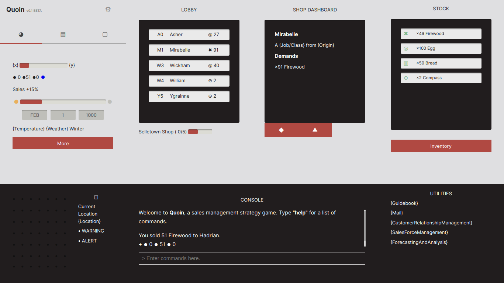

Quoin was an unfinished sales management game where you played as an aspiring shopkeeper hoping to strike gold in the town of Selletown.
I was taking a boring course called Sales and Selling. In order to motivate myself to study, I turned it into a game. The point of the game was to make use of sales management and sales strategies to expand your business.
Final exams flew by faster than I anticipated but I ended up passing the class and Quoin was left in the archives.
